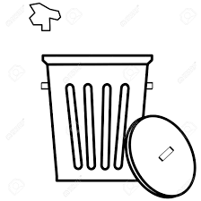
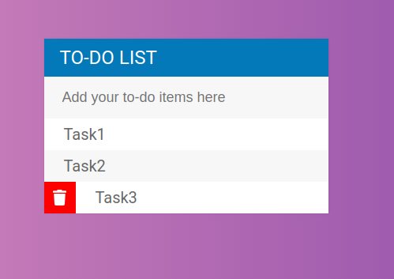
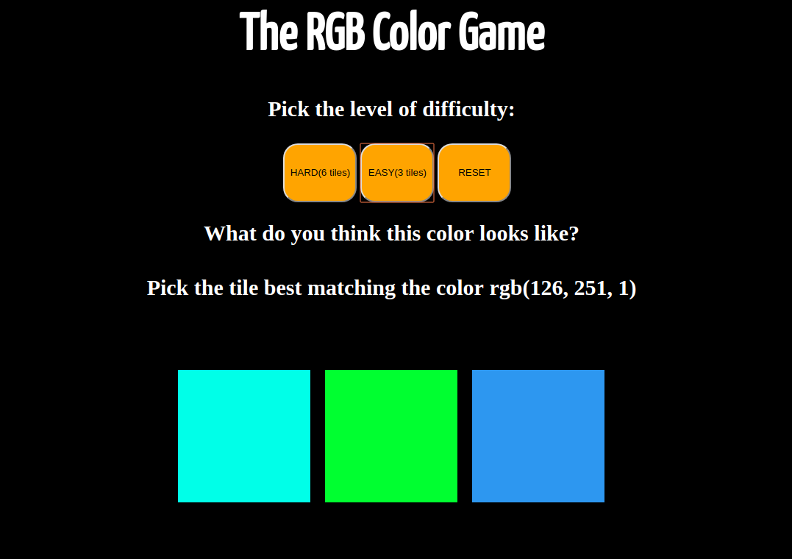
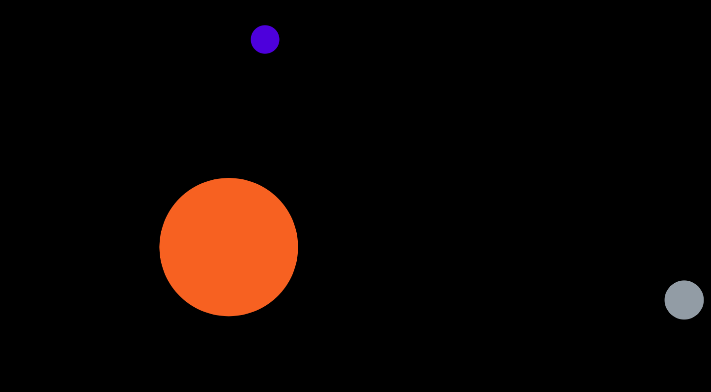

Anushree Abhyankar
| Web Development | 


|
| Programming Languages | 

|
| Deep Learning Frameworks |  |
Anushree Abhyankar
Note - Hello visitor! This is an old website that I created in 2019. If you want to see a more current & updated (read - more "grown up") website, head over to www.anushreeabhyankar.com. I'd like to keep this alive just for fun! :)
Hi! I'm Anushree, a final year student of Computer Engineering studying in the Pune Institute of Computer
Technology (affiliated to Savitribai Phule Pune University). During the course of my engineering
studies, I have particularly enjoyed learning about Distributed Systems, High Performance Computing and
Artificial Intelligence. I am currently exploring (and enjoying!) the world of web development.
Presently, I am working on my final year project at the National Chemical Laboratory (Pune). As a
facilitator at The Apprentice Project, I
teach coding to students from grade 8-10 on the weekends (this is usually my favorite part of the
week!).
In my free time you would usually find me listening to music, reading, watching YouTube
videos or taking a long walk while thinking about life.
| Pune Institute of Computer Technology (2015-2019) BE - Computer Engineering |
|
| Fergusson College (2013-2015) HSC - Science (with vocational Electronics) |
|
| St Mary's School, Pune ICSE |
| Web Development |
|
| Programming Languages |
|
| Deep Learning Frameworks | |
| Sept '18 - Present | National Chemical Laboratory Research Intern Currently working on designing Deep Learning models for the analysis of gene regulation. (Domain - Computational Biology) |
| June '18 - Sept '18 | Tata Consultancy Services Software Development Intern Worked on database design and creation for an NGO under TCS's CSR project - 'Manuski' (Domain - Database Engineering) |
| 1st prize - Smart India Hackathon '19 Problem Statement - Calculation of Credit Score for e-commerce Customers Developed a platform which at its core calculates a CIBIL score for e-commerce customers. Solution went from dataset generation right up to creation of a complete e-commerce Android and web application which shows the different payment options available for an e-commerce customer based on his/her credit score and buyer's profile. |
|
|  | Finalist - Smart India Hackathon '18 Problem Statement - Garbage Volume Estimation using Multi-view images of Garbage Site Created an Android application that identifies a region containing garbage in an image and estimates the volume of the garbage identified. |
| TwitClone Twitter like Django based REST-ful application which supports features like tweet, like/unlike, follow/unfollow, delete, update etc. |
|
| Stock Trend Prediction using Machine Learning Designed a ML model to predict the trend in daily prices of stock indices based on various technical indicators. |
|
| Smart IOT Doorbell Designed a system which captures a visitor’s image when he rings the doorbell and notifies the homeowner about the visitor’s arrival by sending this captured image via email. |
|
|  | TO-DO List An interactive to-do list made using HTML, CSS, JS and JQuery |
|  | Random Color Picker A simple game which requires the player to choose the tile which best matches the random RGB value which appears on the screen. |
|  | Bubble Music A JS application which plays different tunes when you choose different letters of the alphabet. |